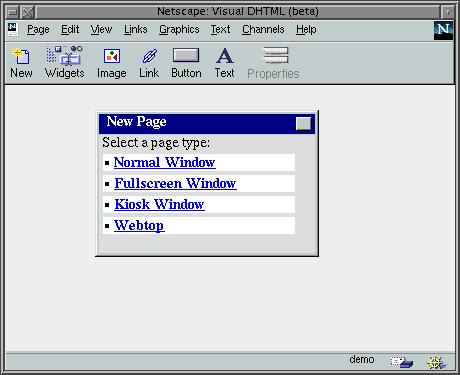
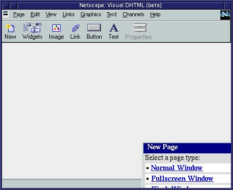
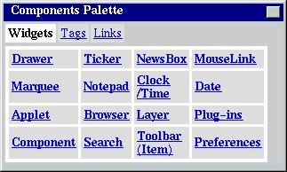
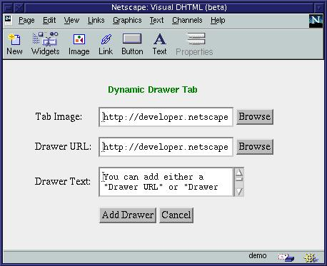

© 1998 by mjh
|
© 1998 by mjh |
 |
muse:
|
Wow, what a month. Since I'd finished working on my Gimp book in July and early August, I had all of September to work on my Muse column. Its been quite some time since I've been able to devote this much time to the Muse. I managed to keep up to date on all the product announcements made over on Slashdot, freshmeat, and on comp.os.linus.announce. And there were a ton of them. So many, in fact, I considered leaving some out just to keep this page from being too large. But that didn't seem right, so this month the Muse is a big, big column.
What we've got this month for you:
You may also want to take a look at the new and improved Graphics Muse Website. I've complete revamped the site. The old Linux Graphics mini-Howto and Unix Graphics Utilities pages are no more - they've been replaced by a searchable database of graphics tools, texts, news stories, and reviews. No more frames either, at least not in the Linux specific sections (my bio page still uses them, however). Its not as nice as Slashdot or Freshmeat, but its better than the static frame-based pages I had before. Hopefully, everyone will find these updates to their liking. It should certainly make finding tools a little easier. At least that was the plan when I started on it.
For those who don't want to see the new graphics in my portal pages, you can jump straight to the Linux specific section. But take a look at the graphics in the portals some time. I really kind of like them.
 |
imwheel 0.7Imwheel makes the wheel of your Intellimouse (and other wheel mice) work in Linux/X11 to scroll windows up and down, or send keys to programs. It runs in the background as a daemon and requires little reconfiguration of the XFree86 setup. 4 or more button mice and Alps Glidepad 'Taps' may also be used.http://solaris1.mysolution.com/~jcatki/
imwheel/
WorldEd 0.2.0WorldEd is a 3d modeller for KDE. It has a grid, a tree view, a 3d view, a Layout manager, and a Modeller. It will have full texture mapping, skeletal modelling, more heirarchal model design, 3dfx dual-screen support and other goodies. Development urgently needs additional contributors.New in version 0.2.0 is autoconf/automake support, seperate Modeller and Layout views, support for Lightwave/Blender ASCII imports, object rotation/scaling and updated screenshots. http://www.geocities.com/
Pentagon/Quarters/2865/
Red Hat to Release NeoMagic sourceSlashdot reports that Red Hat will release the source for the X Binary Free NeoMagic server after having received permission to do so from NeoMagic. This X server source includes support for NeoMagic's MagicGraph128 family of integrated single-chip graphics hardware. The full announcement from Red Hat can be found athttp://slashdot.org/articles/98/09/21/1626214.shtml |
3dom snapshot 980910 (or later)3dom stands for 3-Dimensional Object Modeler. The aim of 3dom is to offer a tool to model reality with user-chosen accuracy, and user-chosen inclination for a particular purpose, which can be gradually improved and extended. 3dom is designed to be a general-purpose modeler, however it is especially inclined to model scenes for Global Illumination purposes.This release features better Renderpark integration, some new concepts, various bugfixes and enhancements. http://www.gv.kotnet.org/~kdf/3dom/
Linux Quake HOWTO 1.0.1.12The Linux Quake Howto explains how to install, run and troubleshoot Quake, QuakeWorld, and Quake II on an Intel Linux system.This version includes updated QuakeWorld install information for the new 2.30 release, info on using the new 3Dfx GL miniport with regular Quake and Quake2, more help on making Quake behave on glibc systems, and lots more. Other Announcements: Simple Direct Media (SDL) Logo contest New Version of Quake 2 is out. |
||
aKtion! 0.2.0 and KXAnimaKtion! is a video player based on xanim. It (xanim) supports many different file formats like FLI animations, FLC animations, IFF animations, GIF87a and GIF89a files, GIF89a animation extensions, DL animations, Amiga MovieSetter animations, Utah Raster Toolkit RLE images and animations, AVI animations, Quicktime Animations and SGI Movie Format files.NOTE: You'll need to have xanim 2.70.7.0 properly installed in your machine to run aKtion!. KXAnim is a C++ widget wrapper around xanim to allow video playing in your apps. Both of these appear to be KDE applications, although they don't specifically state that on the Web site. aKtion! and KXAnim - http://www.geocities.com/
SiliconValley/Haven/3864/aktion.html
Prometheus Truecolour 2.0.8Prometheus Truecolour (PTC) 2.0 C++/Java is the library of choice for demo programming. It allows you to render into an offscreen surface of your choice and then converts it on the fly to whatever video mode is available on the host machine. And it is designed to be small so it can be statically linked into your application.Version 2.0 of the library is currently under heavy development and updated nearly daily. A final release has been scheduled at around the end of August 1998. PTC 2.x is free software under the terms of the GNU Library General Public License (LGPL) http://www.cs.ucl.ac.uk/students/
c.nentwich/ptc/
PyroTechnics 1.2PyroTechnics is an OpenGL-based firework simulator. Features include multiple kinds of fireworks, the ability to choreograph firework displays, a texture-mapped water surface, reflections, a moving camera, and the ability to save screenshots.This version updates v1.0 with bugfixes, portability fixes, and the addition of command-line arguments. http://www.ling.ed.ac.uk/~oliphant/pyro/
k3de 0.0.6k3de is a 3D editor for the K Desktop Environment which generates sources for POVray.ftp://ftp.kde.org/pub/kde/ unstable/apps/graphics/k3de-0.0.6.tgz Quick Image Viewer 0.5Quick Image Viewer (qiv) is a very small and pretty fast GDK/Imlib image viewer. http://www.idnet.de/~AdamK/FxEngine 0.31FxEngine is a 3d graphics library that uses the glide API. It was made by Andreas Ingo and ported to Linux by Michael Pugliese. It is very powerful and easy to use. http://welcome.to/3dfxPS/Editor 's Note: watch out for bright red background - eek! |
ElectricEyes 0.2ElectricEyes is a lightweight GTK+/GNOME-based image viewer. It allows you to view and do simple manipulate of several image formats and gives a nice thumbnail selection mechanism.http://www.labs.redhat.com/ee.shtml
fltk beta-19980825fltk (pronounced "fulltick") is a GPL'd C++ user interface toolkit for X and OpenGL (it has also been ported to windows). Fltk is deliberately designed to be small, so that you can statically link it with your applications and not worry about installation problems. As a side effect it is also extremely fast.This beta includes slight layout modifications, ports to Cray and other 64 bit machines as well as lots of bug fixes and small additions from users. http://www.cinenet.net/
users/spitzak/fltk/
VMD 1.2VMD is designed for the visualization and analysis of biological systems such as proteins, nucleic acids, lipid bilayer assemblies, etc. It may be used to view more general molecules, as VMD can read standard Protein Data Bank (PDB) files and display the contained structure. VMD provides a wide variety of methods for rendering and coloring a molecule: simple points and lines, CPK spheres and cylinders, licorice bonds, backbone tubes and ribbons, cartoon drawings, and others. VMD can be used to animate and analyze the trajectory of a molecular dynamics (MD) simulation. In particular, VMD can act as a graphical front end for an external MD program by displaying and animating a molecule undergoing simulation on a remote computer.http://www.ks.uiuc.edu/
Research/vmd/
XawTV 2.25XawTV is a simple Xaw-based TV program which uses the bttv driver or video4linux. It contains various command-line utilities for grabbing images and avi movies, for tuning in TV stations, etc. A grabber driver for vic and a radio application (needs KDE) for the boards with radio support are included as well.Recent releases include updates to work with version 0.5.14 of the bttv driver and adds a command line tool for recording avi movies plus an ncurses based radio application and driver bugfixes. If you don't get a picture with version 2.24, check out this version. http://user.cs.tu-berlin.de/~kraxel/
linux/#xawtv
MagicianMagician is a commercial OpenGL implementation for Java. Portable to Unix systems, but its unclear if it runs on Linux or not.http://www.arcana.co.uk/ products/magician/ |
||
gifc is a Perl script that requiresPerl version 5.003, patchlevel 23 (preferably 5.004). It also needs the GD Perl module which can be downloaded at http://www.perl.com/CPAN. Although the current version of gifc is 2.5, this is the first public release,. It has been tested on Linux 2.0 and HP-UX 10.20. The home page of gifc is: http://www.club.innet.be/~pub01180/gifctxt.html, from which you can also download the package. The program is released under the GPL. The README file contains build and installation instructions.
The author, Peter Verthez, can be reached for suggestions and bug reports
at pver@innet.be.
http://hawk.ise.chuo-u.ac.jp/student/person/tshiozak/x-tt/index-eng.html
-
English version of web site
http://hawk.ise.chuo-u.ac.jp/student/person/tshiozak/x-tt/index-jap.html
- Japanese version of web site
Editors Note: I think this
is not really an X server but rather serves as an embeddable library for
X servers or as a stand alone font server. Check the web pages for
more detailed information.
Additionally, another update supports the Fujitsu Lifebook 990Tx2 using the ATI Rage LT Pro chip. If using Accelerated-X Laptop Display Server version 4.1.2, apply the update from URL ftp://ftp.xig.com/pub/updates/accelx/laptop/4.1.2/L4102.003.tar.gz . A description of the process to add the update is in the same directory, URL ftp://ftp.xig.com/pub/updates/accelx/laptop/4.1.2/L4102.003.txt .
Detailed results from benchmarking should be available on the Xi Graphics
Web Site, URL http://www.xig.com/ , soon.
The summary of the Xmark'93 single figure benchmark results for these machines
are:
|
|
||||||||||||||||||||||||||||||||||||
SciTech is looking for all types of Linux users to help us stress test the utility before its final release. If you would like to participate in a beta, please contact KendallB@scitechsoft.com or visit the SciTech Web site at http://www.scitechsoft.com.
Editors Note: a form for registering
to participate in the beta release program accompanied this announcement
in comp.os.linux.announce, however I felt it was a bit too large for inclusion
here. The form doesn't appear to be on their web site, so you'll
probably need to send email to the above contact address to request a copy
of
the form. Also, this program may have already expired by the time
this column reaches you. Display Doctor may already be released for
Linux by that time.
http://www.ling.ed.ac.uk/%7Eoliphant/glmame/
Crystal Space 0.11Crystal Space is a free and portable 6DOF 3D engine based on the portal technology. Latest version supports colored lights, mirrors, transparent textures, reflecting surfaces,optional BSP trees, 3D triangle mesh sprites (limited currently), mipmapping, scripting language, static shadows, dynamic lights (but with no shadows), ...http://crystal.linuxgames.com/ GdkRgb 0.0.7GdkRgb is a rewrite of the image rendering subsystem of Gtk+. Advantages over plain Gtk+ 1.0.x include higher speed, very smooth and pretty dithered modes, and support for more displays and visuals. It is currently checked into development versions of Gtk+ (and used in the development tree of the Gimp), but is also packaged separately for application authors who want to maintain Gtk 1.0.x compatibility. The programming interface is quite simple.http://www.levien.com/gdkrgb/
Blender 1.37Being the in-house software of a high quality animation studio, Blender has proven to be an extremely fast and versatile design instrument. The software has a personal touch, offering a unique approach to the world of Three Dimensions. Use Blender to create TV commercials, to make technical visualizations, business graphics, to do some morphing, or design user interfaces. You can easy build and manage complex environments. The renderer is versatile and extremely fast. All basic animation principles (curves & keys) are well implemented.Version 1.37 adds UV Mapping for NURBS as well as bug fixes.
|
kvideogen 1.1KVideoGen allows for easy generation of Modelines, as used by XFree86 to determine your refresh rate, resolution etc. It will allow you to use higher refresh rates, and different resolutions to the 'standard' ones offered by the usual X setup utilities. Note: Read the docs on the website. This program can damage your hardware. Handle with care.http://www.rikkus.demon.co.uk/ PhotoShow 0.1PhotoShow is a simple Perl script that allows viewing, zooming, and adjustment (brightness/contrast/gamma) of images. It also has slideshow capability and is amazingly fast thanks to Imlib.http://www.verinet.com/~devious/ PhotoShow.html WebGFX - A New Gimp-based NetFu SiteThis is a very nice Net-Fu site. The design is quite artistic although the options available for logo generation from Log-O-Mat are a little limited (no foreground/background color, pattern or gradient specifications permitted). The Try-O-Mat is more configurable. The difference is probably due mostly to the limitations in the generic logo Script-Fu scripts that the site is using.http://www.webgfx.ch/ JMK-X11-FontsThe jmk-x11-fonts package contains character-cell fonts for use with the X Window System. The current font included in this package is NouveauGothic, a pleasantly legible variation on the standard fixed fonts that accompany most distributions of the X Window System. It comes in both normal and bold weights in small, medium, large, and extra-large sizes. Currently only ISO-8859-1 encoding is available.http://www.ntrnet.net/~jmknoble/ fonts/jmk-x11-fonts |
Additionally, to complement xfsft, another a small tool that automatically
creates a fonts.dir file for TrueType fonts. It is available from http://www.darmstadt.gmd.de/~pommnitz/ttmkfdir.tar.gz.
The distribution package contains a ttmkfdir
binary for Linux/glibc2 (Intel).
MpegTV Player is now able to stream MPEG's directly from a URL, and
HTTP/FTP support has been added
http://www.mpegtv.com/download.html
Did You Know?...A new objects collection, called simply "POV Objects", is now available for POV-Ray users. See http://povobjects.fsn.net/ |
New Gimp Plug-Ins announced this past
month:
I have the pleasure of announcing a new plug-in for the GIMP. It called 'cam' and allows the GIMP to read CAM files directly. Those files are the ones stores in Casio QV-* digital cameras, that you can dump using QVplay for instance. I am afraid this plug-in is of no use for people who do not possess one of those little toys, though. URL: http://www.mygale.org/~jbn/qv.html
wind - similar to what comes with Photoshop jigsaw - as in puzzle diff - produces an output image based on it's two input images duplicate - just a quick way to copy an image and all it's layers Screenshots and more info as well as source are available at: Nigel Wetten <http://www.cs.nwu.edu/~nigel/gimp/shack.html>
More Did You Know...
...Issue #37 of Design Graphics has explanation of high-end graphics boards and AGP vs. PCI on pg 67. Very good article. |
A: Yes. Use the ASCII 2 Image script:
Q: A Gimp-User mailing list member asked - A few months back someone posted a method (maybe a script) for making text look like it was dripping, as if it had just been painted on and the paint.
A: Alan F. Ho responded: Perhaps the page you are thinking of is: http://www.gimp.org/tut-disp2.html. It's a great tutorial, though I can't seem to make my drippy text quite as nice as JTL's.
Q: Also, if there anyone knows of more "tips" type pages beyond the links on the Gimp page, could you let me know as well.
A: Here are a few:
Thanks to Alan for this information.
Alligator Descartes contacted
the IRTC Administrators with the following email:
If this is of possible interest to you, please get in touch with me. The appropriate blurb on Magician is at:
And his reply to me follows:
It runs pretty fast even though it's using the slightly slow Mesa OpenGL-a-like implementation and supports hardware acceleration where Mesa supports it, typically on Voodoo Graphics accelerators.
Caminati Carlo wrote:
The links are in the section of the column titled Did You Know?.
Andrew Kuchling <akuchlin@cnri.reston.va.us> suggested this:
...
image = self.camera.snap()
image = image.resize( (self.image_width, self.image_height)
)
# Convert from 24-bit colour to an 8-bit palette
image = image.convert( 'P' )
# The quality factor ranges from 0 to 100, with the
default being
# 75. The documentation for libjpeg says that
95 is about
# as high as you want to go; higher values increase
the
# image size but don't affect quality significantly.
image.save( 'foo.jpg', 'JPEG', quality=95)
However, I'll put it on my list of things to do. If you'd like to write a review for this package and have it included in the Graphics Muse column (with full credit to you, of course) feel free to send it my way. I'll make sure it gets included (I may edit it a little to make sure it reads well, but thats about it).
Michal Jaegermann <michal@ellpspace.math.ualberta.ca> wrote to take a minor issue with last months Perl advice in the Muse:
Nobody will run you out of town for an excessive use of punctuation in a Perl code - if these are your private kinks. But claims in a widely published material that one should do that, instead of presenting this as an unhealthy personal habit, is a totally different matter.
However, I would like to address a few points about your reply. First, I don't have the perl documentation installed. I did install Perl 5 binaries at one point, but I don't (currently) run Perl at home - I run it on my Web server, whose Perl installation is handled by the commercial Web server provider (vservers.com). I ran "man perlstyle" but it died trying to display the page for unknown reasons. Same thing with any of the man pages I tried for Perl on that system. So my sources at the time the article was written were the two documents I listed: Programming Perl by Wall & Schwartz and the Official Guide to Programming with CGI.pm by Stein. The former is where I got the information about using ampersands for subroutines. Perhaps this is an outdated document - although I had just purchased it from Borders Books, its print date appears to be 1992! Still, its all I had. Yes, the Perl archives have documenation too, but I also have deadlines. The problem with writing articles (I've slowly discovered) is choosing between reaching a certain level of expertise and actually getting something out to my readers. In this case, I just happened to be working with Perl, so thats how I chose to write about Perl. In fact, its pretty much how every months articles get written. Whatever I happened to be working on that month. But it limits how much of an expert I can become before I have to start writing. Its not a very good excuse, but it is the reality of trying to do this column. Writing is much more work than I had expected.
But, "unhealthy"? Hmmm. The excessive use of ampersands doesn't seem to have affected my current bench press max....
Douglass Turner <turner@redballpro.com> wrote:
I've recently started reading you "Graphics Muse" column. Lots of good stuff. I'm a 3D graphics guy and I'm looking for code to read/write 3D models into/outof the rendering system I wrote. Have you any idea where I should be looking?'Muse: Take a look at Keith Rule's text 3D Graphic File Formats: A Programmers Reference. This is not a Unix package/text, but he has source code for reading and writing many file formats. He says in the book (last time I read it, which was some time back) that it hasn't been ported to Unix but he doesn't know why it wouldn't port easily. You can find a little more info on the text on his Web site.

Where do you get it?
VisualDHTML, which I'll shorten to VDHTML for this article, is a actually a tool written in entirely in DHTML. It is available from Netscape's Web site. Since it is written in a form of HTML you can actually run it across the network, but you may find it more convenient to download the complete package from their web site to your local hard disk. In the tests I ran I found that the performance was significantly better running locally.
The download page for VDHTML is the same as the index page in the package you download. The download file is a zip file which you can save to any local directory. Use the Linux (or equivalent) "unzip" command to unpackage the files, which will be placed in a newly created directory called "visual".
The only prerequsite for running VDHTML is that you have a browser that supports JavaScript 1.2. That fairly well eliminates all browsers except Netscape Communicator 4.06 or the latest 4.5 beta releases of Communicator. If you don't have one of these, you may want to skip the rest of this article. Also, although you are supposed to be able to run this on your local system, attempting to run the application without being connected to the Net or by using local URL's seemed to cause unexpected behaviours: drag and drop no longer worked, widgets did not become visible in the preview window, etc. I suggest, during your experimentation, that you only run this early version while connected to the Net, if possible.
What does it look like?
Once you've unpacked the package you simply need to open the index.html file to get started. For example, if you unpacked the zip file in the /tmp directory you can type the following in the Location field of the Netscape browser:
file:/tmp/visual/index.htmlThe "file:" prefix is not actually necessary, but if you're unfamiliar with accessing files this way you might use it till you get used to where you're headed with this sort of URL. On the index page you'll find a link to Launch Visual DHTML. Just click on this and a small window will open announcing that the application is starting. For the sake of this article we'll refer to this window as the VDHTML Main Window. Once the page starts it looks pretty much like any other application. However, its really just another Web page! This is the first bit of magic to learning about DHTML. The pages they create can look like real applications. Note that the VDHTML page can take a while to load, even from a local hard drive.
Before we get too far I should note that VDHTML is relatively buggy
at this point. If you use it just right it works fine, but straying
from the straight and narrow (ie not using it just right) can cause Netscape
to crash. I'll point out the caveats that I know about as I go.
| 
Figure 1 - The Visual DHTML Main Window |
| 
Figure 2 - Dialogs don't exist outside of the application window |
The Desktop option opens a window that will stay underneath all your other windows and acts like an interactive background image, except that its not "sticky", meaning it doesn't follow you around to other desktops (again, assuming you have a window manager like FVWM or CDE/mwm that allows multiple virtual desktops).
Once you've opened your New Window you are ready to start adding DHTML components to it. VDHTML comes with a set of predefined widgets that you can add to your page. Clicking on the Widgets icon in the menu bar of the Main Window will open the Widgets dialog (see Figure 3). Note that you may need to click and hold the left mouse button over the Widgets icon longer than you might normally in order to get the dialog to open. At least I did on my system. Also, when you click on a widget name in the dialog you need to hold the mouse button down until after the dialog is closed. Then release the mouse button. If you don't do it in this order the configurable parameters for the widget will not be shown and you won't get the widget in the preview window. Clicking in the Widgets dialog and releasing the mouse button before the dialog closes will simply close the dialog.
Ok, so you've got the Widgets dialog opened. Notice that the dialog is actually labeled "Components Palette" - a bit of inconsistancy from Netscape, but thats to be expected with any first release of a product. The available widgets are listed in a table, below a set of three options which act something like tabs in a notebook widget. The first tab is the widgets tab, which provides components like menus and buttons and clocks. The next tab is for setting specific HTML tags. The last tab is for setting link properties.
Bug: don't try to access the Tags option in the Widgets dialog without a preview window open. Doing so will crash netscape. In fact, the widgets dialog in general seems to cause Netscape crashes at random.
The available widgets include some unusual components, such as the drawer
widget. This option creates what appears to be a small button that,
when pressed, opens a drop down menu. This button can be placed anywhere
in the page but seems to want to be anchored only to window edges.
I'm not sure if thats intentional or a bug in VDHTML. Also, the default
image for the drawer (the small button) can be changed to any image you
want when you configure the widget. Figure 4 shows the configuration
options for the drawer widget.
| 
Figure 4 - Configurable options for the Drawer Widget |
| One exception to dragging is the marquee widget.
This widget creates a window that drops down (or comes in from the sides
or up from the bottom of the browser window) with an image or text, sort
of like an animated menu. But you can't drag marquees in the preview
window. You have to specify the direction from which the marquee
will enter the browser when you create it by using the configurable options.
Apparently the marquee will always be on the left side of the preview window
but as always you can edit the source later to move it to another location
and have it enter the browser appropriately from any point.
Bug: While experimenting with the various widgets I discovered that they often didn't perform as expected in the preview window. Sometimes I could open a drawer, for example, but not close it. Buttons would post a menu but then I couldn't clear it. Its clear that the widgets functionality and their interaction within the preview window are still to be worked out. With all widgets the VDHTML Main Window offers configurable parameters. The defaults for those options which require a URL point to Netscape's site. This isn't a problem but you should keep it in mind if you take the default option values. If you decide to use the defaults (remember: be online if you do so or VHDTML might crash Netscape!) you can edit the HTML document by hand later and use your own URLs. |
Figure 5 - Default Marquee Widget |
 |
| What is X Input?
To quote from the X Input Howto: The XInput extension is an extension to X to allow the use of input devices beyond the standard mouse and keyboard. The extension supports a wide range of devices, including graphics tablets, touch-screens, joysticks, and dial-boxes. The most common use is probably for graphics tablets.For many readers of the Muse, X Input is how you'll want to interface with the Gimp. Outside of the Gimp there are only a few other tools that currently make use of the X Input extension. However, as graphics tools on Linux mature, there will be a much greater need for these sorts of extra input devices. Later, after we cover some configuration and testing issues, we'll restrict our application discussion to the two tools you are most likely to use with X Input: Gimp and gsumi. What X servers support X Input? X Input is reported to be supported by all 3 of the major X server vendors: XFree86 (which includes SuSE since they work so closely in their X server development), Xi Graphics, and MetroLink. Xi Graphics sent me their latest server, 4.1.2, to try for this article. I also downloaded the 3.3.2 XF86_SVGA server for use with my Matrox Mystique. I neglected to contact MetroLink in time to ask for a copy of their server, unfortunately. An email I received from MetroLink back in March stated that their 4.3 server includes support for dynamically loadable X Input driver modules. This includes Elo Graphics, Carroll, Micro Touch and Lucas/Deeco touch screens. They also mentioned plans for support of Wacom tablets and 3D input devices such as the Space Orb but I don't know if this support has been released yet or not. I also don't have any information on how devices would be configured to work with their X Input drivers. In testing the two servers I did have, I was successful in getting only one of them to work, XFree86's XF86_SVGA server. I have to thank Owen Taylor for his helpful hints and suggestions in getting that server up and running with X Input. Most of the information I'm going to provide came with clarifications from Owen. The Xi Graphics server does list X Input as a supported extension, both in the documentation and from the xdpyinfo program. However, there is no information available on how to get that extension to recognize and work with any particular devices. It may be possible to use the gxid daemon, a daemon program which comes with the Gtk+ source distribution, to work with this server but I was unsuccessful in doing so. I contacted Xi Graphics about this and the last I heard they are still looking into it. I haven't heard if they had any more success than I did. Since I was only able to get one server to work with X Input, the rest of this article will focus on that server. If I get feedback from any one, vendors or users, on getting the other two servers to work with X Input I'll write up an update here in the Muse. What devices are supported? The XFree86 support of X Input includes drivers for the following devices:
Requirements for making use of the XFree86 X Input support I have a Matrox Mystique card with 4Mb of memory which I've been using for about 2 years now. This card is still on the market and will cost you roughly $100US or less depending on where you purchase it. Along with this I'm using a Wacom PenPartner, a 4"x5" tablet that sells for about $79US. This is the low end tablet from Wacom. The Matrox card is supported by the XF86_SVGA server (see the Resources section at the end of this article). X Input support in XFree86 has been available in since the 3.3.1 release (at least, perhaps longer). Most Linux users will probably have either the 3.3.1 or the latest 3.3.2 servers if they use any distribution that is less than 2 years old. |
||
| Along with the servers you also need to make use
of one or more loadable modules. If you are like me and use the PenPartner
tablet then you need to make sure you have the 3.3.2 version of the xf86wacom.so
module. The 3.3.1 version of this module does not support the PenPartner
but should work fine for other Wacom tablets.
If you have the 3.3.1 version of XFree86, you can download the particular server you need and the X3323bin.tgz file, which contains the binary versions of the 3.3.2 modules (plus other tools). You can find links to these packages from the XFree86 web site. You might wonder if you can run your older 3.3.1 libraries with an the newer 3.3.2 servers and modules. The answer is yes, you can. You don't have to update all your libraries, development tools, and X applications (the tools under /usr/X11R6/bin) although you can if you want a full 3.3.2 update. Along with the server and modules there are a couple of other tools you'll want to make sure you have:
Configuring the X server and hardware In order to make use of the X Input extension you need to tell the X server about how you want it configured and what driver to load for the device you will be using. XFree86's configuration file, XF86Config, is located under the directory /etc/X11. Although you can use the graphical setup tool XF86Setup for most options, you can't use it to configure X Input. You'll need to edit the configuration file by hand. The first thing you need to know about is which modules you'll need. Under /usr/X11R6/lib/modules you will find the X Input modules. For Wacom tablets you'll be using the xf86Wacom.so module. Similarly, SummaGraphics tablet users will want to use the xf86Summa.so modules. There are also modules for Elo Graphics devices (xf86Elo.so) and joysticks (xf86Jstk.so). To configure the module for use with the server, edit the XF86Config file and add the following lines: Section "Module"
The text to add looks like the following: Section "Xinput"The 4 SubSections define different devices to X Input. You can see these listed (after you start the server) by running xsetpointer -l. I'm not completely certain why you have to have two entries for each device but assume that the first entry is used by applications and the other entry is used to allow the tablet pen to be used as your regular pointing device. <More> |
 |
| Online Magazines and News sources
C|Net Tech News Linux Weekly News Slashdot.org Amazon.com's Linux Book Section General Web Sites
Some of the Mailing Lists and Newsgroups I keep an eye on and where
I get much of the information in this column
|
 |
Graphics Muse #1, November 1996
Graphics Muse #2, December 1996
Graphics Muse #3, January 1997
Graphics Muse #4, February 1997
Graphics Muse #5, March 1997
Graphics Muse #6, April 1997
Graphics Muse #7, May 1997
Graphics Muse #8, June 1997
Graphics Muse #9, July 1997
Graphics Muse #10, August 1997
Graphics Muse #11, October 1997
Graphics Muse #12, December 1997
Graphics Muse #13, February 1998
Graphics Muse #14, March 1998
Graphics Muse #15, April 1998
Graphics Muse #16, August 1998
Graphics Muse #17, September 1998
![[ TABLE OF CONTENTS ]](../gx/indexnew.gif)
![[ FRONT PAGE ]](../gx/homenew.gif)